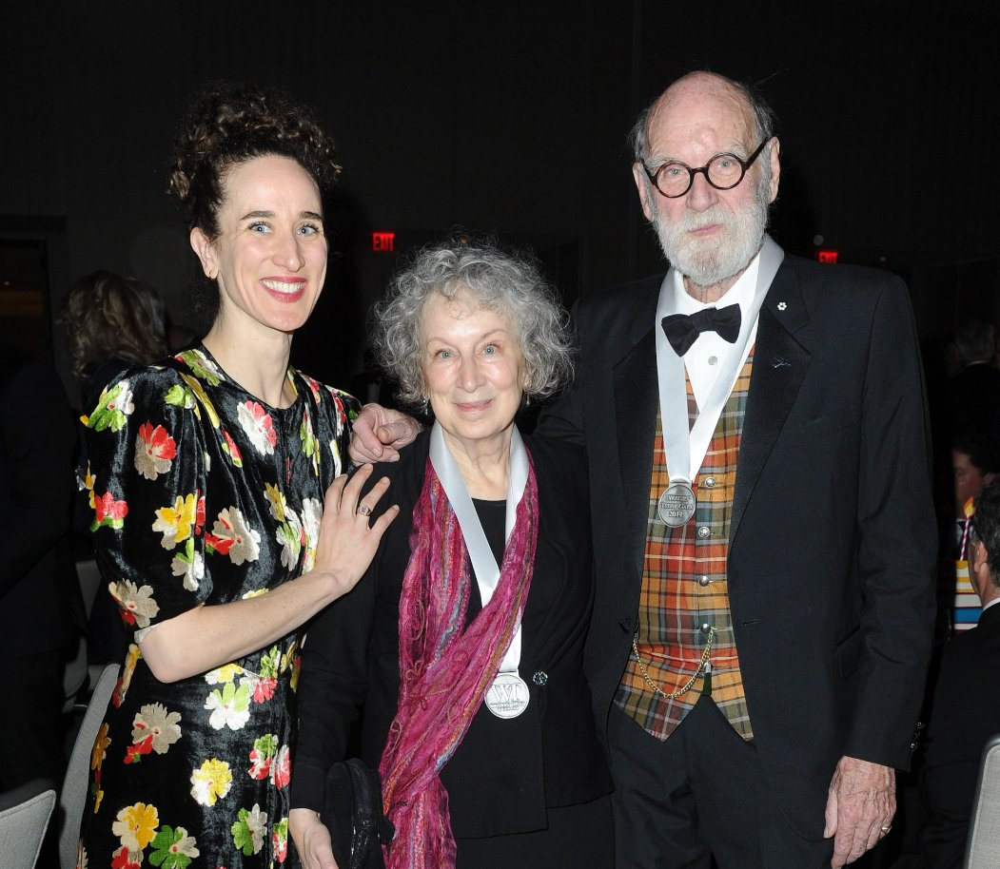
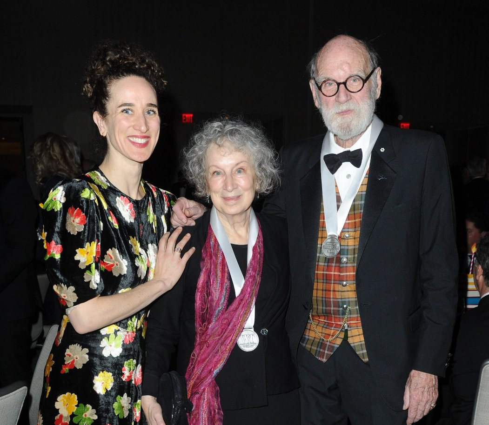

Imagens curiosas de Margaret Atwood
 Margaret Atwood no lançamento de O Testamento
Margaret Atwood ao lado da Protagonista da série O Conto da Aia, adaptação de um de seus livros
Margaret Atwood ao lado da atriz principal da série O Conto da Aia, adaptação de um de seus livros

Margaret Atwood ao lado da filha e marido
Margaret Atwood no lançamento de O Testamento
Margaret Atwood ao lado da Protagonista da série O Conto da Aia, adaptação de um de seus livros
Margaret Atwood ao lado da atriz principal da série O Conto da Aia, adaptação de um de seus livros

Margaret Atwood ao lado da filha e marido